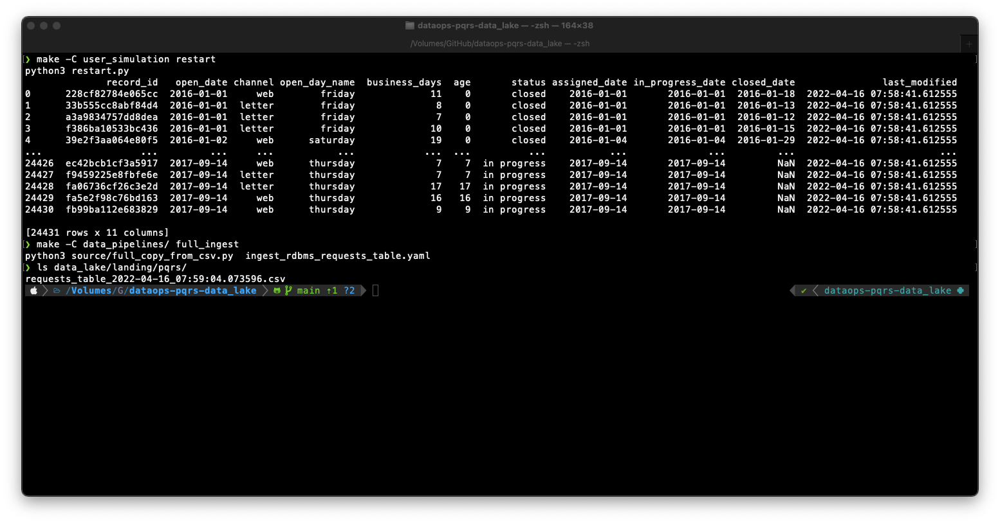
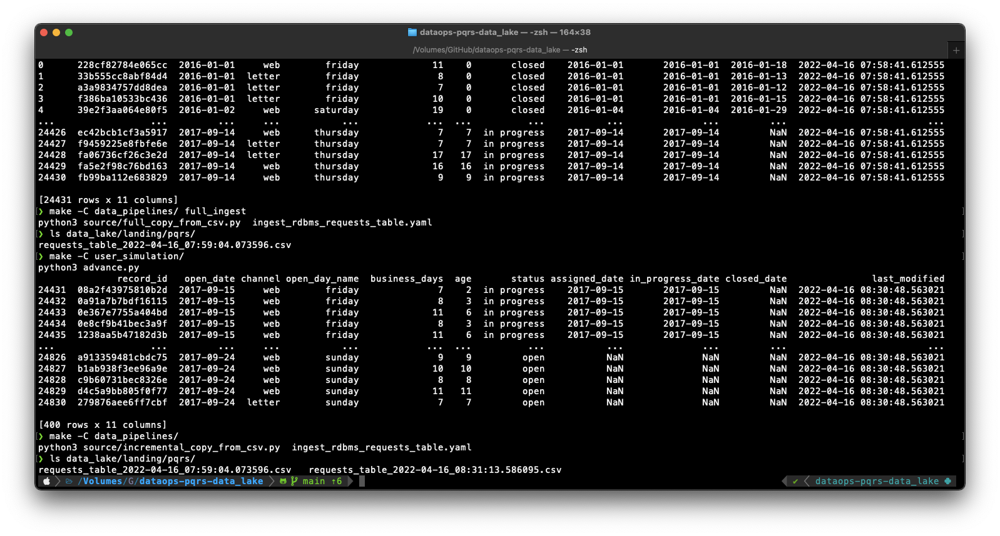

Etapa 6 — Migración a un data lake
Ultima modificación: Mayo 14, 2022 | YouTube
Definición de la situación actual


Por el crecimiento de la compañía, se ha decidido migrar a una arquitectura de datos basada en un data lake que, por el momento estará disponible, estará disponible en el sistema local de la empresa.
Daniel, ingeniero de datos, es responsable por la implementación del data lake, y de la creación y automatización de las tuberías de datos para el flujo de la información.
El transaccional del pqrs no se afecta, ya que los sistemas de bases de datos continuan su operación normal.
Se decide modificar las demás aplicaciones existentes para que consuman la información del data lake.
Problemas
Hay que automatizar la ejecución de las tuberías de datos.
El uso del data lake obliga a la modificación del código de los aplicativos. Sin embargo, esta tarea puede ser muy dificil si el código no es de calidad industrial.
Hay que garantizar que las modificaciones y adiciones de código en las tuberías de datos, y cambios en las arquitecturas de datos, no hagan fallar los demás aplicativos que consumen información
Arquitectura del data lake
Los nombres de las carpetas pueden cambiar, pero la funcionalidad siempre es similar.
.
|___ data_lake/
|___ landing/ # datos en bruto (validos y no validos)
| |___ data_source_1/
| |___ data_source_2/
| ...
|
|___ raw/
| |___ data_source_1/ # datos validos (sin limpiar) en formato nativo
| |___ data_source_2/ # posiblemente categorizados segun necesidad
| ...
|
|___ clean/ # datos listos para consumo con un formato
| |___ dir1/ # optimizado para su consumo por otras aplicaciones
| |___ dir2/ # categorizados por area/objetivo y particionados
| |___ dir3/ # si es requerido
| ...
|
|___ business/ # capas especificas para aplicaciones como reporteria
|___ dir1/ # y dashboards, y consumo por equipos de trabajo como
|___ dir2/ # data science y business intelligence.
|___ dir3/
...
Tubería full_copy_from_csv.py
Se utiliza para mover archivos completos CSV al data lake.
En la práctica existen tuberías equivalentes para llevar tablas completas de una base de datos al data lake.
Tambien se usan para mover todos los archivos de una carpeta del data lake a otra.
El código es genérico y se parametriza indicando la fuente y el destino, así como la frecuencia de ejecución.
Tubería incremental_copy_from_csv.py
Se usa para mover los datos que se han adicionado en un archivo desde la última copia al destino.
Se suele usar un campo
last_modifiedcomo estrategía para determinar cuales son los registros modificados o los registros nuevos en la tabla de origen.Se copian únicamente los registros modificados al destino en un archivo nuevo, de tal forma que se pueda llevar el histórico de las copias.
En la práctica exiten tuberías incrementales para mover los registros nuevos o modificados desde fuentes como bases de datos.
Repositorio en GitHub
El código completo de este documento se encuentra disponible en:
https://github.com/jdvelasq/dataops-pqrs-data-lake
$ make -C user_simulation/ restart
$ make -C data_pipelines/ full_ingest
$ ls data_lake/landing/pqrs/
requests_table.....csv

$ make -C user_simulation/
$ make -C data_pipelines/
$ ls data_lake/landing/pqrs/
requests_table.....csv
requests_table.....csv
